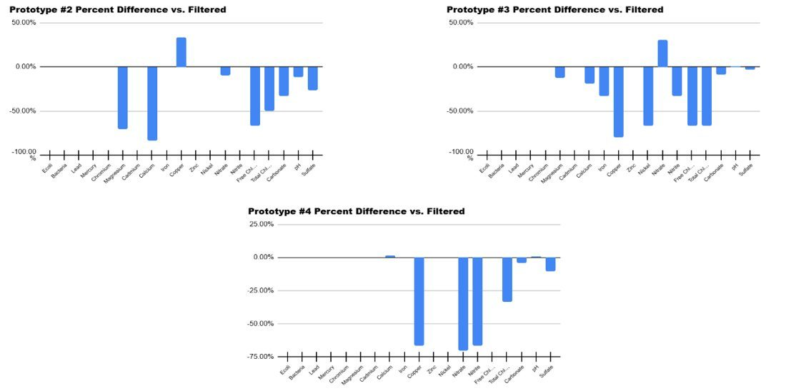
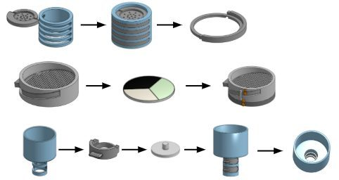

Water purification device
Science fair project · 2024 · With Dayul Lee
- Collaborator
- Dayul Lee — we shared the research and the design decisions throughout
- Date
- 2024
- Method
- 8 filtration approaches across 3 families; 18 parameters; 3 trials per method per measure against matched dirty and clean controls
- Build
- 3D printed — two replaceable filtration-tray compartments plus a larger membrane compartment
- Result
- First prize, school science fair
My uncle drank turbid well water in front of me while we were visiting family in India. The device came out of that; the testing regime came out of not wanting to claim it worked without being able to show it.
-
$2.41Per unit — over ten times cheaper than a typical water filter
-
18Water-quality parameters tested per trial
What we measured
We tested 18 parameters on every trial: E. coli, general bacteria, lead, mercury, chromium, magnesium, cadmium, calcium, iron, copper, zinc, nickel, nitrate, nitrite, free chlorine, total chlorine, carbonate, pH and sulfate. We ran them with test strips and with specialised testing products we got by cold-emailing the companies that make them, which is how two high schoolers ended up with reagents we could not otherwise have afforded.
What we tested
Eight filtration approaches across three families, so that we were comparing within a mechanism as well as between mechanisms:
- Reverse osmosis
- Three membrane micron ratings — 100, 30 and 5
- Carbon adsorption
- Three wood charcoals — coconut, hickory and oak
- Ion exchange
- Two materials — volcanic ash and zeolites
Three trials per method per measure, each against matched dirty and clean controls. The controls are the part I would defend hardest: without a clean control run on the same day with the same strips, a reading only tells you what the strip said, not what the filter did.

The final combination
The unit that won on the data combines a 5-micron membrane, hickory carbon adsorption, zeolite ion exchange and volcanic ash ion exchange, with a cheesecloth pass-through. Hickory beat coconut and oak on our measures; the 5-micron membrane beat the coarser two, which is unsurprising, but testing all three is what let us say so rather than assume it.

Design for cost
We 3D printed the housing for low unit cost and mass producibility, with two replaceable filtration-tray compartments and one larger membrane compartment, so the consumable parts are the only parts you replace. The final unit costs $2.41 to produce, over ten times cheaper than a typical water filter, and it took first prize at our school science fair.
What I would change
The honest limit of this project is not the filtration. It is what I wrote at the time: social barriers rendered low trust with unfamiliar technologies. We built something that costs $2.41 and works, and none of that addresses whether a household will use a device they have never seen before to treat water they have been drinking untreated for years. A cheaper filter that nobody adopts filters nothing.
Technically, three trials per measure is enough to spot a large effect and not enough to put an error bar on a small one. Several of the differences we reported between charcoals are inside the noise of a test strip, and I would either run more trials or say plainly which comparisons the data cannot settle.